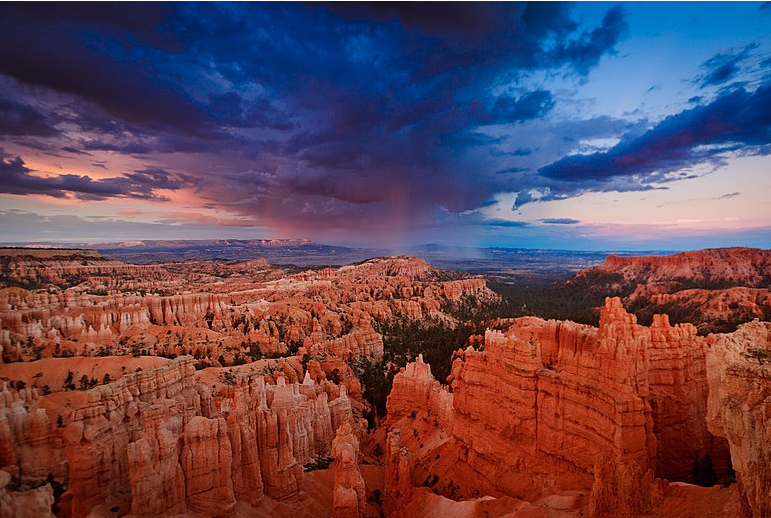

|  |
Bryce Canyon National Park
By Leia Reclusado
Bryce Canyon National Park is an American national park located in southwestern Utah. The major feature of the park is Bryce Canyon, which despite its name, is not a canyon, but a collection of giant natural amphitheaters along the eastern side of the Paunsaugunt Plateau. Bryce is distinctive due to geological structures called hoodoos, formed by frost weathering and stream erosion of the river and lake bed sedimentary rocks. The red, orange, and white colors of the rocks provide spectacular views for park visitors. Bryce Canyon National Park is much smaller, and sits at a much higher elevation than nearby Zion National Park. The rim at Bryce varies from 8,000 to 9,000 feet. |